Removing and Installing/Replacing Exhaust Camshaft
11 31 028 Removing and installing/replacing exhaust camshaft (N52K)Special tools required:
Important!
It is absolutely essential to follow an exact procedure for removing and installing the exhaust camshaft.
Risk of damage!
The upper and lower bearing strips must be pre-tensioned with a total of six special tools 11 4 461.
Necessary preliminary tasks:
^ Remove cylinder head cover
^ Remove exhaust camshaft adjuster
^ Adjust valve timing
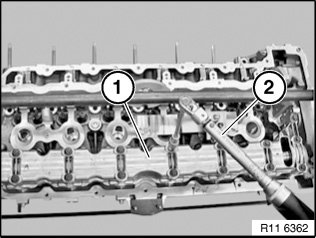
The screw connection of the bearing strips must be released from the outside inwards.
Lift out upper and lower bearing strips (1) with exhaust camshaft.
Remove upper bearing strip (1).
Remove exhaust camshaft from lower bearing strip.

Important!
Markings of intake and exhaust camshafts are different.
Mixing up the intake and exhaust camshaft will result in engine damage.
A Exhaust camshaft
E Intake camshaft
Important!
Plain compression rings (1) can easily break.
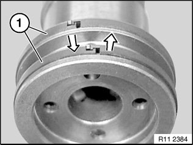
Plain compression rings (1) are engaged at joint.
Press plain compression rings (1) apart upwards and downwards and removed towards front.
Important!
Removal on engine:
Set engine to ignition TDC at cylinder No. 1.
Removed cylinder head:
When using special tool 11 9 000, it will be necessary to remove the aluminum profile insert.
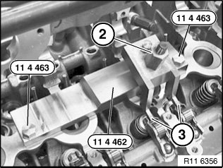
Mounting bearing strip:
Pre-install special tool 11 4 462 on cylinder no. 2.
Insert special tool 11 4 463 in screw connection of cylinder head cover.
Important!
Special tool 11 4 463 is a special screw.
Press down rocker arms (3) on cylinder no. 2 with spindle nut (2) of special tool 11 4 462.
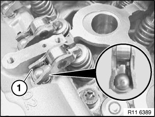
Installation:
Before mounting the exhaust camshaft on the correct cam follower seat (1), pay attention to the hydraulic valve clearance adjustment element and the valve.
Refer to Removing and installing/replacing all cam followers.
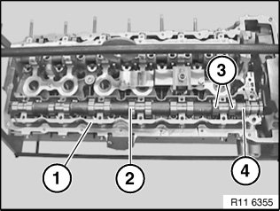
Position lower bearing strip (1) with exhaust camshaft (2) on rocker arms.
Align exhaust camshaft (2).
Cylinder nos. 2 and 4 are at valve overlap.
Cams (3) on cylinder no. 1 point upwards at an angle.
Part number (4) on mounting flats of exhaust camshaft (2) points upwards.

Important!
There must be no adhesive residues in the cylinder head tapped holes.
Clean threaded holes.
Fit upper bearing strip (1).
Insert bolts dry.
Tension down upper bearing strip (1) with exhaust camshaft at bearing points 3 and 5 through a 1/2 bolt turn.
Join exhaust camshaft to upper and lower bearing strips (1) with torque wrench (2) from inside outwards to 8 Nm.
Release all screws of upper bearing strip (1) from outside inwards by 90°.
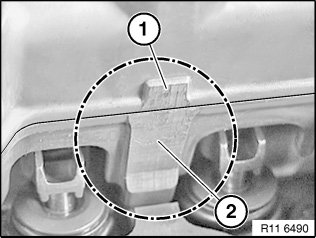
Installation:
Upper and lower bearing strips must be aligned to each other at ground surfaces (1 and 2).
Make sure that the thrust piece and the legs of special tools 11 4 461 rest on the milled surfaces.
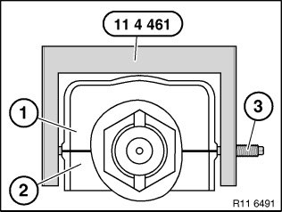
Note:
Schematic depiction of special tool 11 4 461 at upper bearing strip (1) and lower bearing strip (2).
Pre-tension all special tools 11 4 461 with special tool 11 4 350 only.
Important!
Tighten screw (3) on thrust piece to 2 Nm. Risk of damage!
Position special tool 11 4 461 over screw connection of bearing strips.
Make sure that the legs rest exactly on the ground surfaces of the upper bearing strip (2) and lower bearing strip (1).
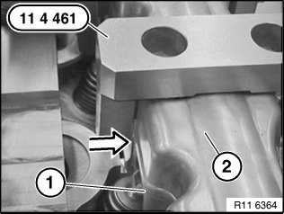
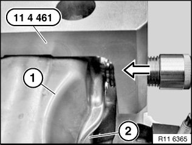
Initially tighten screw of special tool 11 4 461 to ground surfaces of upper bearing strip (1) and lower bearing strip (2).
Important!
Tighten screws on thrust piece to 2 Nm. Risk of damage!
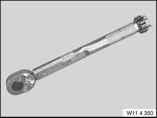
Important!
Set special tool 11 4 350 to 2 Nm.
Pre-tension all special tools 11 4 461 with special tool 11 4 350 only.
Mount special tools 11 4 461 with screw (1) to inside of cylinder head.
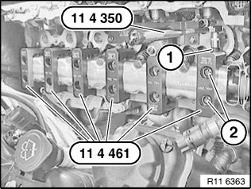
Mount special tool 11 4 461 with screw facing outwards on cylinder no. 2.
Position special tools 11 4 461 so that screw connections (2) of bearing strip are easily accessible.
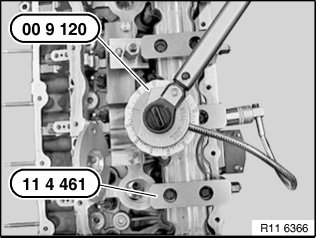
Tighten upper and lower bearing strips with special tool 00 9 120.
Tightening torque 11 31 1AZ.
Important!
Remove special tool 11 4 461 only when exhaust camshaft screw connection is completed.
Assemble engine.